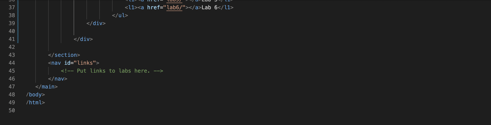
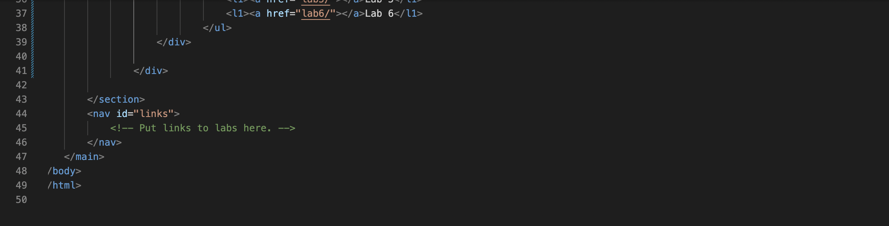

Lab 3 File Structures
Challenge
Lab 3's challenge was to create a local file sturture and an index.html file.
Problems
A challenge that I often encountered during this lab, was figuring out specifically what errors I made when the code was red. If me and my partner weren't able to figure out the issue, what we did was seach up the task I was having issues on and compare it to the outline W3Schools provided. Anything on W3Schools outline I didn't have were the adjustments I'd make to my code.
Reflection
This assignment was not as challenging as I made it out to be. It even became fun problem solving with my partner and because of this we didn't hesitate to invest additional time and energy into this assingment.
Results
Below is my file structure:
Below is my source code in html for my homepage:
 

Below is my source code for Lab 3: